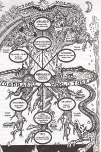

Mitologia Skandynawska
Odyn
najwyższy z bogów nordyckich z dynastii Azów, bóg wojny i wojowników, bóstwo mądrości, władzy, poezji i magii. Był mężem bogini Frigg i ojcem Thora. Całą trójkę bogów czczono w świątyni w Uppsali. Wraz z Freją przewodził poległym wojownikom w Walhalli. W mitologii germańskiej znany również jako Wodan lub Wotan. Współcześnie czczony przez neopogańskie Ásatrú i tradycje odalizmu.
Baldur
w mitologii nordyckiej syn Odyna i Frigg, małżonek bogini Nanny, ojciec Forsetiego[1]; symbol dobra, piękna i mądrości.
Frigg
bogini nordycka z rodu Azów. Według poematu Lokasenna córka starszego bóstwa Fjørgyn, według innych źródeł olbrzymki Jörð i Odyna, siostra lub macocha Thora. Frigg była małżonką Odyna, boginią małżeństwa, opiekunką rodziny, ogniska domowego i bóstwem deszczu.
Loki
olbrzym z mitologii nordyckiej, zaliczony w poczet bogów, symbol ognia i oszustwa. Syn olbrzyma Farbautiego i Laufey. Loki posiadał zdolność przemiany (w łososia, konia, ptaka, pchłę itp.), włącznie ze zmianą płci.
Ymir Starszy
w mitologii nordyckiej pierwsza żywa istota, praolbrzym, który wyłonił się z ciepłej wody w otchłani Ginnungagap
Hajmdal
(od staroislandzkiego Heimdall = "Początek Wszystkiego" lub Heim Dall = "Drzewo Świata"), Rig – w mitologii nordyckiej bóg strzegący Tęczowego Mostu zwanego Bifrost, będącego wejściem do Asgardu